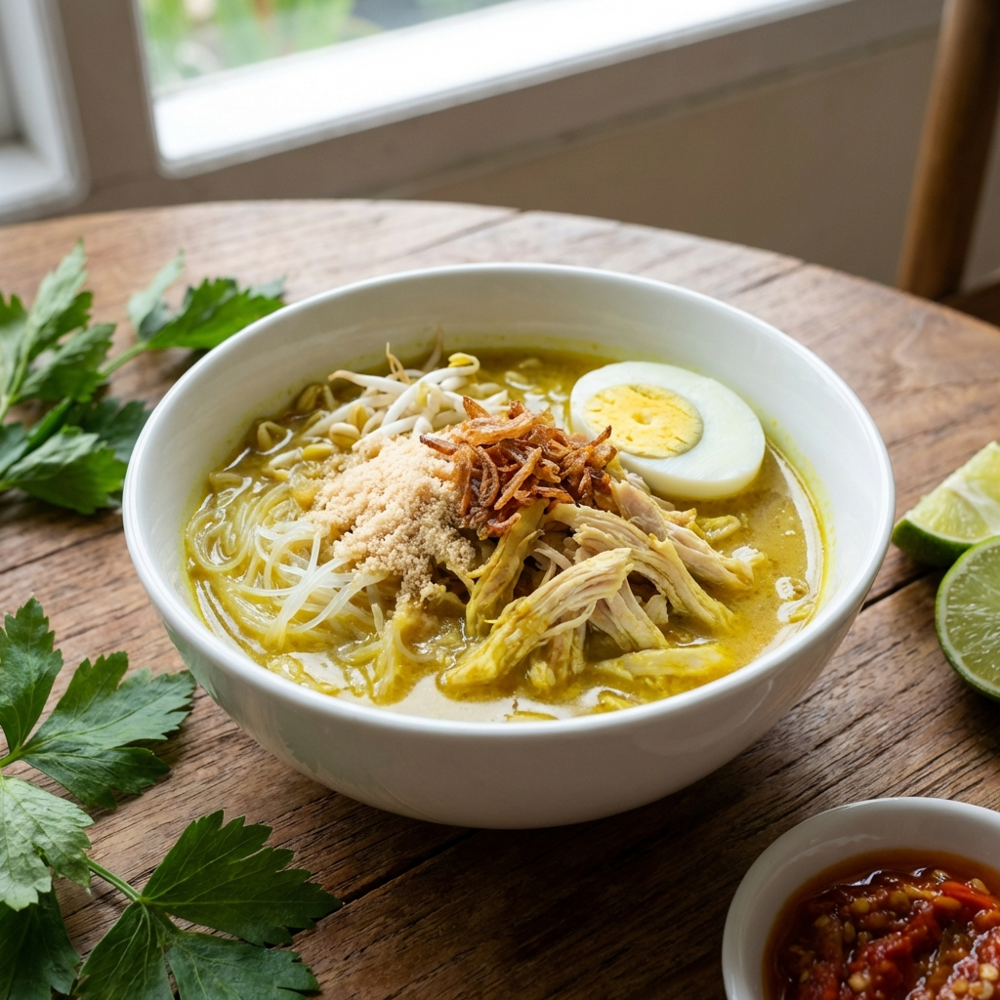

Kuliner & Budaya
Menelusuri Jejak Lezat Kuliner Khas Lamongan
Sejarah, cita rasa, dan legalitas budaya kuliner Lamongan: Soto Ayam, Nasi Boran, dan Tahu Campur yang melegenda.
Read More arrow_forward